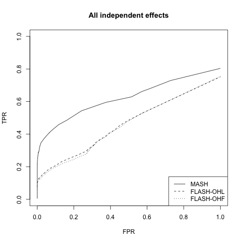
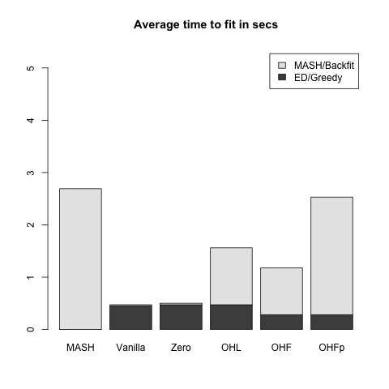
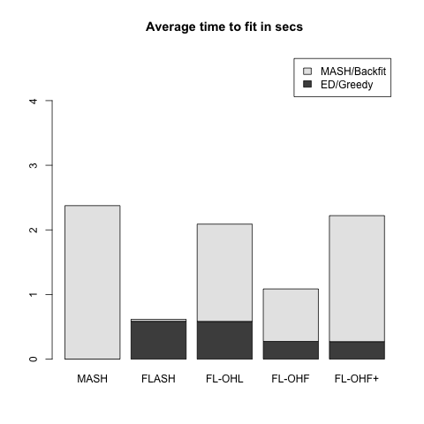
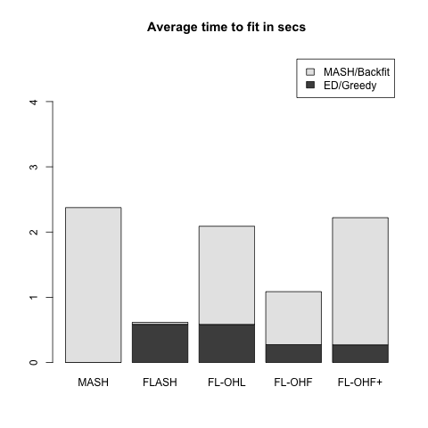
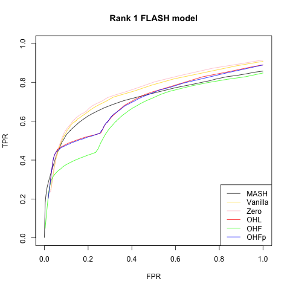
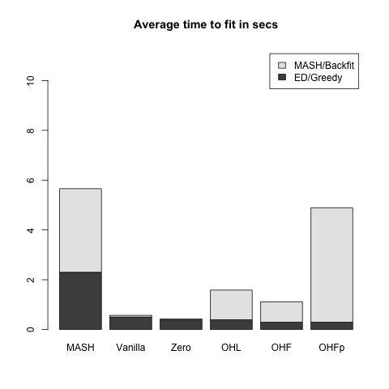
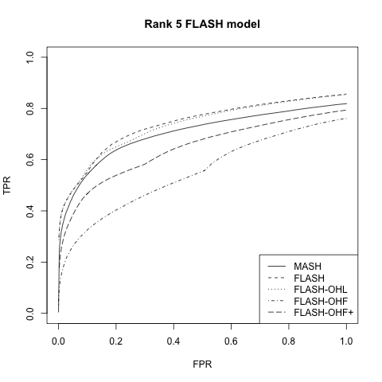
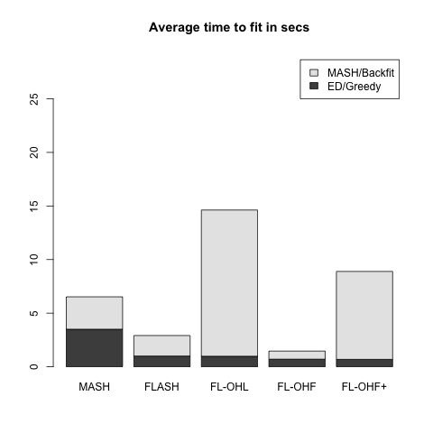

MASH v FLASH simulation results
Last updated: 2018-08-05
workflowr checks: (Click a bullet for more information)-
✔ R Markdown file: up-to-date
Great! Since the R Markdown file has been committed to the Git repository, you know the exact version of the code that produced these results.
-
✔ Environment: empty
Great job! The global environment was empty. Objects defined in the global environment can affect the analysis in your R Markdown file in unknown ways. For reproduciblity it’s best to always run the code in an empty environment.
-
✔ Seed:
set.seed(20180609)The command
set.seed(20180609)was run prior to running the code in the R Markdown file. Setting a seed ensures that any results that rely on randomness, e.g. subsampling or permutations, are reproducible. -
✔ Session information: recorded
Great job! Recording the operating system, R version, and package versions is critical for reproducibility.
-
Great! You are using Git for version control. Tracking code development and connecting the code version to the results is critical for reproducibility. The version displayed above was the version of the Git repository at the time these results were generated.✔ Repository version: c5bf4c4
Note that you need to be careful to ensure that all relevant files for the analysis have been committed to Git prior to generating the results (you can usewflow_publishorwflow_git_commit). workflowr only checks the R Markdown file, but you know if there are other scripts or data files that it depends on. Below is the status of the Git repository when the results were generated:
Note that any generated files, e.g. HTML, png, CSS, etc., are not included in this status report because it is ok for generated content to have uncommitted changes.Ignored files: Ignored: .DS_Store Ignored: .Rhistory Ignored: .Rproj.user/ Ignored: data/ Ignored: docs/.DS_Store Ignored: docs/images/.DS_Store Ignored: docs/images/.Rapp.history Ignored: output/.DS_Store Ignored: output/.Rapp.history Ignored: output/MASHvFLASHgtex/.DS_Store Ignored: output/MASHvFLASHsims/.DS_Store Ignored: output/MASHvFLASHsims/backfit/.DS_Store Ignored: output/MASHvFLASHsims/backfit/.Rapp.history
Expand here to see past versions:
| File | Version | Author | Date | Message |
|---|---|---|---|---|
| Rmd | c5bf4c4 | Jason Willwerscheid | 2018-08-05 | wflow_publish(“analysis/MASHvFLASHsims.Rmd”) |
| html | bd4c96b | Jason Willwerscheid | 2018-07-28 | Build site. |
| Rmd | 72a2202 | Jason Willwerscheid | 2018-07-28 | wflow_publish(“analysis/MASHvFLASHsims.Rmd”) |
| html | 860aa52 | Jason Willwerscheid | 2018-07-22 | Build site. |
| Rmd | 3abd505 | Jason Willwerscheid | 2018-07-22 | wflow_publish(c(“analysis/MASHvFLASHsims.Rmd”, |
| html | 36a39f6 | Jason Willwerscheid | 2018-07-22 | Build site. |
| Rmd | 179099b | Jason Willwerscheid | 2018-07-22 | wflow_publish(c(“analysis/MASHvFLASHgtex.Rmd”, |
| html | b7181f2 | Jason Willwerscheid | 2018-07-22 | Build site. |
| Rmd | 7f05edf | Jason Willwerscheid | 2018-07-22 | wflow_publish(“analysis/MASHvFLASHsims.Rmd”) |
| html | 69cecbc | Jason Willwerscheid | 2018-06-20 | Build site. |
| Rmd | abf0f70 | Jason Willwerscheid | 2018-06-20 | workflowr::wflow_publish(c(“analysis/intro.Rmd”, |
| html | 2d8f091 | Jason Willwerscheid | 2018-06-20 | Build site. |
| Rmd | eda9441 | Jason Willwerscheid | 2018-06-20 | wflow_publish(“analysis/MASHvFLASHsims.Rmd”) |
| html | 90dd578 | Jason Willwerscheid | 2018-06-19 | Build site. |
| Rmd | 3cf7f0c | Jason Willwerscheid | 2018-06-19 | wflow_publish(“analysis/MASHvFLASHsims.Rmd”) |
| html | 6fd3720 | Jason Willwerscheid | 2018-06-19 | Build site. |
| html | 358412a | Jason Willwerscheid | 2018-06-15 | Build site. |
| Rmd | a9a9e11 | Jason Willwerscheid | 2018-06-15 | wflow_publish(“analysis/MASHvFLASHsims.Rmd”) |
| html | 726168a | Jason Willwerscheid | 2018-06-15 | Build site. |
| html | aa46b38 | Jason Willwerscheid | 2018-06-15 | Build site. |
| Rmd | d3f8191 | Jason Willwerscheid | 2018-06-15 | wflow_publish(“analysis/MASHvFLASHsims.Rmd”) |
| html | c2699a6 | Jason Willwerscheid | 2018-06-15 | Build site. |
| Rmd | 3554f17 | Jason Willwerscheid | 2018-06-15 | wflow_publish(“analysis/MASHvFLASHsims.Rmd”) |
| html | 03dc24a | Jason Willwerscheid | 2018-06-15 | Build site. |
| Rmd | 0c0d6b2 | Jason Willwerscheid | 2018-06-15 | wflow_publish(“analysis/MASHvFLASHsims.Rmd”) |
Introduction
Here I compare MASH and FLASH fits to data simulated from various MASH and FLASH models. In addition to comparing different methods for obtaining FLASH fits, I was interested to see how FLASH performed on data generated from a MASH model (and vice versa). For the code used in this analysis, see below.
Fitting methods
The MASH fit is produced following the recommendations in the MASH vignettes (using both canonical matrices and data-driven matrices).
Three FLASH fits are produced. The first serves as a baseline. The “Zero” FLASH fit simply adds up to 25 factors greedily, with var_type set to "zero" to reflect the fact that standard errors are fixed at 1.
The other two fits also use parameter option var_type = "zero". OHL (for “one-hots last”) adds up to 25 factors greedily, then adds “canonical” factors (an all-ones vector and a one-hot vector for each row in the data matrix). It backfits the canonical factors, but not the greedily-added ones.
OHF (for “one-hots first”) adds the canonical factors first, then backfits, then greedily adds up to 25 factors.
I also experimented with doing an additional backfit for each of the three FLASH fits. It increased the time needed to fit (sometimes as much as eightfold), but results were otherwise very similar.
Simulations
All simulated datasets \(Y\) are of dimension 25 x 1000. In each case, \(Y = X + E\), where \(X\) is the matrix of “true” effects and \(E\) is a matrix of \(N(0, 1)\) noise. One simulation is from the null model, three are generated according to a MASH model, and two are generated from a FLASH model. See the individual sections below for details.
The MASH fits are evaluated using built-in functions get_pm() to calculate MSE, get_psd() to calculate confidence intervals, and get_lfsr() to calculate true and false positive rates.
For the FLASH fits, only MSE is calculated using a built-in function (flash_get_fitted_values()). Confidence intervals and true and false positive rates are calculated by sampling from the posterior using function flash_sampler(). For details, see the code below.
Results: null model
Here the entries of \(X\) are all zero.
While FLASH does very well, MASH does poorly here. I’m not sure why this is the case; in runs with different seeds, MASH performed at least as well as FLASH.
| Zero | OHL | OHF | MASH | |
|---|---|---|---|---|
| MSE | 0 | 0.001 | 0.001 | 0.004 |
| 95% CI cov | 1 | 1.000 | 1.000 | 0.783 |
Results: MASH models
As expected, MASH outperforms FLASH when the data is generated from a MASH model. The MSE obtained using a MASH fit is about half the MSE obtained using any of the FLASH fits, and the 95% confidence intervals given by MASH contain the “true” values in 98-99% of cases, whereas the FLASH coverage can fall a bit short of 95%. Further, the MASH ROC curves consistently dominate the FLASH ROC curves.
Interestingly, however, there is no clear victor among the FLASH methods. Results for the “Zero” and OHL methods are nearly identical. I suspect that this is because loadings for the “canonical” factors are estimated to be essentially zero, so that there is no substantial difference between the two fits. The OHF method tends to do slightly better in terms of MSE and confidence interval coverage, but the OHL ROC curves dominate the OHF ROC curves for FPR < 0.6.
The OHF method is consistently faster than both MASH and the other FLASH methods, while the OHL method is the slowest of the four methods.
Independent effects
Here the columns \(X_{:, j}\) are either identically zero (with probability 0.8) or identically nonzero. In the latter case, the entries of the \(j\)th column of \(X\) are i.i.d. \(N(0, 2^2)\).
| Zero | OHL | OHF | MASH | |
|---|---|---|---|---|
| MSE | 0.33 | 0.33 | 0.31 | 0.16 |
| 95% CI cov | 0.94 | 0.94 | 0.95 | 0.99 |
 
Independent, shared, and unique effects
This model is similar to the above two, but now only a third of the nonnull columns have independently distributed entries and a third have shared entries. The other third have a unique nonzero entry. (This corresponds, for example, to a gene that is only expressed in a single condition.) The unique effects are distributed uniformly across rows, and are drawn from a \(N(0, 10^2)\) distribution.
| Zero | OHL | OHF | MASH | |
|---|---|---|---|---|
| MSE | 0.19 | 0.18 | 0.14 | 0.07 |
| 95% CI cov | 0.94 | 0.95 | 0.95 | 0.99 |
 

Results: FLASH models
Interestingly, MASH is very competitive with FLASH even when the true model is a FLASH model. Indeed, of the four fits, the MASH fit gives the best results for the rank 5 model.
Results for the “Zero” and OHL fits are again very similar, and both do quite a bit better than the OHF method, which does poorly in terms of MSE on the rank 1 model and in terms of FPR/TPR trade-off on the rank 5 model. (However, it outperforms the “Zero” and OHL fits in terms of confidence interval coverage.) Further, the OHF method is much slower here (if not worryingly so). I suspect that this is because the canonical factors are quickly “zeroed out” when the greedily-added “data-driven” factors (which, I assume, are pretty close to the true \(F\)) have already been added, whereas much more time is spent backfitting them when no data-driven factors have yet been added.
Rank 1 model
This is the FLASH model \(X = LF\), where \(L\) is an \(n\) by \(k\) matrix and \(F\) is a \(k\) by \(p\) matrix. In this first simulation, \(k = 1\). 80% of the columns in \(F\) and 20% of the entries in \(L\) are equal to zero. The other entries of \(F\) are i.i.d. \(N(0, 1)\); the nonzero entries of \(L\) are i.i.d. \(N(0, 2^2)\).
| Zero | OHL | OHF | MASH | |
|---|---|---|---|---|
| MSE | 0.01 | 0.01 | 0.10 | 0.02 |
| 95% CI cov | 0.93 | 0.95 | 0.97 | 0.98 |
 
Rank 5 model
This is the same as above with \(k = 5\), with 80% of the entries in \(L\) equal to zero, and with the other entries i.i.d. \(N(0, 1)\).
| Zero | OHL | OHF | MASH | |
|---|---|---|---|---|
| MSE | 0.06 | 0.06 | 0.10 | 0.05 |
| 95% CI cov | 0.92 | 0.94 | 0.95 | 0.96 |
 
Code
for simulating datasets…
## SIMULATION FUNCTIONS -------------------------------------------------
# n is number of conditions, p is number of genes
# Noise is i.i.d. N(0, 1)
get_E <- function(n, p, sd = 1) {
matrix(rnorm(n * p, 0, sd), n, p)
}
# Simulate from null model ----------------------------------------------
null_sim <- function(n, p, seed = NULL) {
set.seed(seed)
Y <- get_E(n, p)
true_Y <- matrix(0, n, p)
list(Y = Y, true_Y = true_Y)
}
# Simulate from MASH model ----------------------------------------------
# Sigma is list of covariance matrices
# pi[j] is probability that effect j has covariance Sigma[[j]]
# s is sparsity (percentage of null effects)
mash_sim <- function(n, p, Sigma, pi = NULL, s = 0.8, seed = NULL) {
set.seed(NULL)
if (is.null(pi)) {
pi = rep(1, length(Sigma)) # default to uniform distribution
}
assertthat::are_equal(length(pi), length(Sigma))
for (j in length(Sigma)) {
assertthat::are_equal(dim(Sigma[j]), c(n, n))
}
pi <- pi / sum(pi) # normalize pi to sum to one
which_sigma <- sample(1:length(pi), p, replace=TRUE, prob=pi)
nonnull_fx <- sample(1:p, floor((1 - s)*p), replace=FALSE)
X <- matrix(0, n, p)
for (j in nonnull_fx) {
X[, j] <- MASS::mvrnorm(1, rep(0, n), Sigma[[which_sigma[j]]])
}
Y <- X + get_E(n, p)
list(Y = Y, true_Y = X)
}
# Simulate from FLASH model ---------------------------------------------
# fs is sparsity of factors (percentage of null effects)
# fvar is variance of effects (generated from normal distribution)
# ls is sparsity of loadings
# lvar is variance of loadings
# UVvar is variance of dense rank-one matrix included to mimic something
# like unwanted variation (set it to 0 to ignore it)
flash_sim <- function(n, p, k, fs, fvar, ls, lvar, UVvar = 0, seed = NULL) {
set.seed(seed)
nonnull_ll <- matrix(sample(c(0, 1), n*k, TRUE, c(ls, 1 - ls)), n, k)
LL <- nonnull_ll * matrix(rnorm(n*k, 0, sqrt(lvar)), nrow=n, ncol=k)
nonnull_ff <- matrix(sample(c(0, 1), p, TRUE, c(fs, 1 - fs)),
nrow=k, ncol=p, byrow=TRUE)
FF <- nonnull_ff * matrix(rnorm(k*p, 0, sqrt(fvar)), nrow=k, ncol=p)
X <- LL %*% FF
Y <- X + get_E(n, p)
# add unwanted variation
Y <- Y + outer(rnorm(n, 0, sqrt(UVvar)), rnorm(p, 0, sqrt(UVvar)))
list(Y = Y, true_Y = X)
}
## SIMULATIONS ----------------------------------------------------------
# Functions to generate six types of datasets. One is null; three are
# from the MASH model; two are from the FLASH model.
sim_fns <- function(n, p, s,
indvar, shvar, uniqvar,
r1var, r5var) {
# 1. Everything is null
sim_null <- function(){ null_sim(n, p) }
Sigma <- list()
# 2. Effects are independent across conditions
Sigma[[1]] <- diag(rep(indvar, n))
Sigma_ind <- Sigma
sim_ind <- function(){ mash_sim(n, p, Sigma_ind, s=s) }
# 3. Effects are either independent or shared
Sigma[[2]] <- matrix(shvar, n, n)
Sigma_indsh <- Sigma
sim_indsh <- function(){ mash_sim(n, p, Sigma_indsh, s=s) }
# 4. Effects are independent, shared, or unique to a single condition
for (j in 1:n) {
Sigma[[2 + j]] <- matrix(0, n, n)
Sigma[[2 + j]][j, j] <- uniqvar
}
pi <- c(n, n, rep(1, n))
sim_mash <- function(){ mash_sim(n, p, Sigma, pi, s=s) }
# 5. Rank one model
sim_rank1 <- function(){ flash_sim(n, p, 1, s, r1var, 0.2, 1) }
# 6. Rank 5 model
sim_rank5 <- function(){ flash_sim(n, p, 5, s, r5var, 0.8, 1) }
# 7. Rank 3 model with unwanted variation
# sim_UV <- function(){ flash_sim(n, p, 3, s, r3var, 0.5, 1, UVvar) }
c(sim_null, sim_ind, sim_indsh, sim_mash, sim_rank1, sim_rank5)
}
sim_names <- c("Null simulation",
"All independent effects",
"Independent and shared",
"Independent, shared, and unique",
"Rank 1 FLASH model",
"Rank 5 FLASH model")…for fitting MASH and FLASH objects…
# Fit using FLASH -------------------------------------------------------
fit_flash_zero <- function(data, Kmax, ebnm_fn="ebnm_pn",
init_fn="udv_svd", greedy=TRUE, backfit=TRUE,
warmstart=TRUE) {
if (is.matrix(data)) {
data <- flash_set_data(data, S = 1)
}
n <- nrow(data$Y)
t0 <- Sys.time()
if (greedy) {
res <- flash_add_greedy(data, Kmax, var_type="zero",
ebnm_fn=ebnm_fn, init_fn=init_fn,
warmstart=warmstart)
fl <- res$f
} else {
fl <- flash_add_factors_from_data(data, Kmax, init_fn=init_fn)
}
t1 <- Sys.time()
if (backfit) {
res <- flash_backfit(data, fl, var_type="zero",
ebnm_fn=ebnm_fn)
fl <- res$f
}
t2 <- Sys.time()
t.greedy <- t1 - t0
t.backfit <- t2 - t1
list(f = fl, t.greedy = t.greedy, t.backfit = t.backfit)
}
fit_flash_OHL <- function(data, Kmax, ebnm_fn="ebnm_pn",
init_fn="udv_svd", greedy=TRUE, backfit=TRUE,
warmstart=TRUE) {
if (is.matrix(data)) {
data <- flash_set_data(data, S = 1)
}
n <- nrow(data$Y)
canonical <- cbind(rep(1, n), diag(rep(1, n)))
zero.res <- fit_flash_zero(data, Kmax, ebnm_fn, init_fn,
greedy, backfit=FALSE, warmstart)
fl <- flash_add_fixed_l(data, canonical, zero.res$f, init_fn=init_fn)
t0 <- Sys.time()
if (backfit) {
res <- flash_backfit(data, fl,
var_type="zero", ebnm_fn=ebnm_fn,
nullcheck=FALSE)
fl <- res$f
} else {
K <- flashr:::flash_get_k(fl)
res <- flash_backfit(data, fl, kset=(K - ncol(canonical) + 1):K,
var_type="zero", ebnm_fn=ebnm_fn,
nullcheck=FALSE)
fl <- res$f
}
t1 <- Sys.time()
t.backfit <- Sys.time() - t0
list(f = fl, t.greedy = zero.res$t.greedy, t.backfit = t.backfit)
}
fit_flash_OHF <- function(data, Kmax, ebnm_fn="ebnm_pn",
init_fn="udv_svd", greedy=TRUE, backfit=TRUE,
warmstart=TRUE) {
if (is.matrix(data)) {
data <- flash_set_data(data, S = 1)
}
n <- nrow(data$Y)
canonical <- cbind(rep(1, n), diag(rep(1, n)))
t0 <- Sys.time()
fl <- flash_add_fixed_l(data, canonical)
res <- flash_backfit(data, fl, var_type="zero", ebnm_fn=ebnm_fn,
nullcheck=FALSE)
fl <- res$f
t1 <- Sys.time()
if (greedy) {
res <- flash_add_greedy(data, Kmax, fl, var_type="zero",
ebnm_fn=ebnm_fn, init_fn=init_fn,
warmstart=warmstart)
fl <- res$f
} else {
fl <- flash_add_factors_from_data(data, Kmax, fl, init_fn=init_fn)
}
t2 <- Sys.time()
K = flashr:::flash_get_k(fl)
if (backfit && K > ncol(canonical)) {
res <- flash_backfit(data, fl,
kset=(ncol(canonical) + 1):K,
var_type="zero", ebnm_fn=ebnm_fn,
nullcheck=FALSE)
fl <- res$f
}
t3 <- Sys.time()
t.greedy <- t2 - t1
t.backfit <- (t1 - t0) + (t3 - t2)
list(f = fl, t.greedy = t.greedy, t.backfit = t.backfit)
}
# Fit using MASH -------------------------------------------------------
fit_mash <- function(data) {
if (is.matrix(data)) {
data <- mash_set_data(t(data))
}
timing <- list()
# time to create canonical matrices is negligible
U = cov_canonical(data)
t0 <- Sys.time()
m.1by1 <- mash_1by1(data)
lvl <- 0.05
strong <- get_significant_results(m.1by1, lvl)
while (length(strong) < 5 && lvl < 0.5) {
lvl <- lvl + 0.05
strong <- get_significant_results(m.1by1, lvl)
}
if (length(strong) >= 5) {
U.pca <- cov_pca(data, 5, strong)
U.ed <- cov_ed(data, U.pca, strong)
U <- c(U, U.ed)
t.ed <- Sys.time() - t0
} else {
t.ed <- as.difftime(0, units="secs")
}
t0 <- Sys.time()
m <- mash(data, U)
t.mash <- Sys.time() - t0
list(m = m, t.ed = t.ed, t.mash = t.mash)
}…for evaluating performance…
# Evaluate methods based on MSE, CI coverage, and TPR vs. FPR -----------
flash_diagnostics <- function(fl, Y, true_Y, nsamp) {
MSE <- flash_mse(fl, true_Y)
# Sample from FLASH fit to estimate CI coverage and TPR vs. FPR
fl_sampler <- flash_sampler(Y, fl, fixed="loadings")
fl_samp <- fl_sampler(nsamp)
CI <- flash_ci(fl_samp, true_Y)
ROC <- flash_roc(fl, fl_samp, true_Y)
list(MSE = MSE, CI = CI, TP = ROC$TP, FP = ROC$FP,
n_nulls = ROC$n_nulls, n_nonnulls = ROC$n_nonnulls)
}
mash_diagnostics <- function(m, true_Y) {
MSE <- mash_mse(m, true_Y)
CI <- mash_ci(m, true_Y)
ROC <- mash_roc(m, true_Y)
list(MSE = MSE, CI = CI, TP = ROC$TP, FP = ROC$FP,
n_nulls = ROC$n_nulls, n_nonnulls = ROC$n_nonnulls)
}
# MSE of posterior means (FLASH) ----------------------------------------
flash_mse <- function(fl, true_Y) {
mean((flash_get_fitted_values(fl) - true_Y)^2)
}
# MSE for MASH ----------------------------------------------------------
mash_mse <- function(m, true_Y) {
mean((get_pm(m) - t(true_Y))^2)
}
# 95% CI coverage for FLASH ---------------------------------------------
flash_ci <- function(fl_samp, true_Y) {
n <- nrow(true_Y)
p <- ncol(true_Y)
nsamp <- length(fl_samp)
flat_samp <- matrix(0, nrow=n*p, ncol=nsamp)
for (i in 1:nsamp) {
flat_samp[, i] <- as.vector(fl_samp[[i]])
}
CI <- t(apply(flat_samp, 1, function(x) {quantile(x, c(0.025, 0.975))}))
mean((as.vector(true_Y) >= CI[, 1]) & (as.vector(true_Y) <= CI[, 2]))
}
# 95% CI coverage for MASH ----------------------------------------------
mash_ci <- function(m, true_Y) {
Y <- t(true_Y)
mean((Y > get_pm(m) - 1.96 * get_psd(m))
& (Y < get_pm(m) + 1.96 * get_psd(m)))
}
# LFSR for FLASH --------------------------------------------------------
flash_lfsr <- function(fl_samp) {
nsamp <- length(fl_samp)
n <- nrow(fl_samp[[1]])
p <- ncol(fl_samp[[1]])
pp <- matrix(0, nrow=n, ncol=p)
pn <- matrix(0, nrow=n, ncol=p)
for (i in 1:nsamp) {
pp <- pp + (fl_samp[[i]] > 0)
pn <- pn + (fl_samp[[i]] < 0)
}
1 - pmax(pp, pn) / nsamp
}
# Quantities for plotting ROC curves -----------------------------------
flash_roc <- function(fl, fl_samp, true_Y, step=0.01) {
roc_data(flash_get_fitted_values(fl), true_Y, flash_lfsr(fl_samp), step)
}
mash_roc <- function(m, true_Y, step=0.01) {
roc_data(get_pm(m), t(true_Y), get_lfsr(m), step)
}
roc_data <- function(pm, true_Y, lfsr, step) {
correct_sign <- pm * true_Y > 0
is_null <- true_Y == 0
n_nulls <- sum(is_null)
n_nonnulls <- length(true_Y) - n_nulls
ts <- seq(0, 1, by=step)
tp <- rep(0, length(ts))
fp <- rep(0, length(ts))
for (t in 1:length(ts)) {
signif <- lfsr <= ts[t]
tp[t] <- sum(signif & correct_sign)
fp[t] <- sum(signif & is_null)
}
list(ts = ts, TP = tp, FP = fp, n_nulls = n_nulls, n_nonnulls = n_nonnulls)
}
# empirical false sign rate vs. local false sign rate
# efsr_by_lfsr <- function(pm, true_Y, lfsr, step) {
# pred_signs <- sign(pm)
# pred_zeros <- pred_signs == 0
# pred_signs[pred_zeros] <- sample(c(0, 1), length(pred_zeros), replace=T)
#
# gotitright <- (pred_signs == sign(true_Y))
#
# nsteps <- floor(.5 / step)
# efsr_by_lfsr <- rep(0, nsteps)
# for (k in 1:nsteps) {
# idx <- (lfsr >= (step * (k - 1)) & lfsr < (step * k))
# efsr_by_lfsr[k] <- ifelse(sum(idx) == 0, NA,
# 1 - sum(gotitright[idx]) / sum(idx))
# }
# efsr_by_lfsr
# }…for running simulations and plotting results…
# Functions for running simulations and combining results ---------------
run_sims <- function(sim_fn, nsims, plot_title, fpath, Kmax=50,
backfit=FALSE) {
if (nsims == 1) {
res = run_one_sim(sim_fn, Kmax, backfit)
} else {
res = run_many_sims(sim_fn, nsims, Kmax, backfit)
}
saveRDS(output_res_mat(res$res), paste0(fpath, "res.rds"))
if (!(plot_title == "Null simulation")) {
png(paste0(fpath, "ROC.png"))
plot_ROC(res$res, plot_title)
dev.off()
}
png(paste0(fpath, "time.png"))
plot_timing(res$timing)
dev.off()
return(res)
}
run_one_sim <- function(sim_fn, Kmax, nsamp=200, backfit) {
data <- do.call(sim_fn, list())
# If there are no strong signals, trying to run ED throws an error, so
# we need to do some error handling to fit the MASH object
mfit <- fit_mash(data$Y)
flfits <- list()
flfits$Zero <- fit_flash_zero(data$Y, Kmax, backfit=backfit)
flfits$OHL <- fit_flash_OHL(data$Y, Kmax, backfit=backfit)
flfits$OHF <- fit_flash_OHF(data$Y, Kmax, backfit=backfit)
message("Running MASH diagnostics")
mres <- mash_diagnostics(mfit$m, data$true_Y)
message("Running FLASH diagnostics")
methods <- names(flfits)
flres <- list()
for (method in methods) {
flres[[method]] <- flash_diagnostics(flfits[[method]]$f, data$Y,
data$true_Y, nsamp)
}
# Combine results:
timing = lapply(flfits,
function(method) {
list(ed.or.greedy = method$t.greedy,
mash.or.backfit = method$t.backfit)
})
timing$MASH <- list(ed.or.greedy = mfit$t.ed,
mash.or.backfit = mfit$t.mash)
all_res <- flres
all_res$MASH <- mres
list(timing = timing, res = all_res)
}
run_many_sims <- function(sim_fn, nsims, Kmax, backfit) {
res <- list()
combined_res <- list()
for (i in 1:nsims) {
message(paste(" Simulating dataset", i))
res[[i]] <- run_one_sim(sim_fn, Kmax, backfit=backfit)
}
elems <- names(res[[1]])
for (elem in elems) {
combined_res[[elem]] <- list()
subelems <- names(res[[1]][[elem]])
for (subelem in subelems) {
combined_res[[elem]][[subelem]] <- list()
subsubelems <- names(res[[1]][[elem]][[subelem]])
for (subsubelem in subsubelems) {
tmp <- lapply(res, function(x) {x[[elem]][[subelem]][[subsubelem]]})
combined_res[[elem]][[subelem]][[subsubelem]] <- Reduce(`+`, tmp) / nsims
}
}
}
return(combined_res)
}
# Plotting and output functions -----------------------------------------
plot_timing <- function(timing, units="secs") {
data <- sapply(timing, unlist)
data <- data[, c(4, 1, 2, 3)]
barplot(colSums(data), axes=T,
main=paste("Average time to fit in", units),
names.arg = colnames(data),
#legend.text = c("ED/Greedy", "MASH/Backfit"),
ylim = c(0, max(colSums(data))*2),
cex.names = 0.8)
# (increasing ylim is easiest way to deal with legend getting in way)
}
plot_ROC <- function(res, main="ROC curve") {
# Number of nulls and nonnulls are identical across methods
n_nonnulls <- res[[1]]$n_nonnulls
n_nulls <- res[[1]]$n_nulls
m_y <- res$MASH$TP / n_nonnulls
m_x <- res$MASH$FP / n_nulls
plot(m_x, m_y, xlim=c(0, 1), ylim=c(0, 1), type='l',
xlab='FPR', ylab='TPR', main=main, col="orange")
idx <- 1:3
colors <- c("skyblue", "seagreen", "yellow2")
for (i in idx) {
y <- res[[i]]$TP / n_nonnulls
x <- res[[i]]$FP / n_nulls
lines(x, y, col=colors[i])
}
legend("bottomright", c("MASH", names(res)[idx]), lty=1,
col=c("orange", colors[idx]), cex=0.8)
}
output_res_mat <- function(res) {
mat <- rbind(sapply(res, function(method) {method$MSE}),
sapply(res, function(method) {method$CI}))
rownames(mat) = c("MSE", "95% CI cov")
return(mat)
}…and the main function calls.
# Make sure to use branch "trackObj" when loading flashr.
# devtools::install_github("stephenslab/flashr", ref="trackObj")
devtools::load_all("/Users/willwerscheid/GitHub/flashr/")
# devtools::install_github("stephenslab/ebnm")
devtools::load_all("/Users/willwerscheid/GitHub/ebnm/")
library(mashr)
source("./code/sims.R")
source("./code/fits.R")
source("./code/utils.R")
source("./code/mashvflash.R")
set.seed(1)
# s is sparsity (prop null genes); var parameters define sizes of effects
all_sims <- sim_fns(n=25, p=1000, s=0.8,
indvar=4, shvar=2, uniqvar=100,
r1var=4, r5var=1)
for (i in 1:length(all_sims)) {
message(paste(" Beginning simulation #", i, sep=""))
res <- run_sims(all_sims[[i]], nsims=10, plot_title=sim_names[[i]],
fpath = paste0("./output/MASHvFLASHsims/greedy/sim", i),
Kmax=25, backfit=FALSE)
}
for (i in 1:length(all_sims)) {
message(paste(" Beginning simulation #", i, sep=""))
res <- run_sims(all_sims[[i]], nsims=10, plot_title=sim_names[[i]],
fpath = paste0("./output/MASHvFLASHsims/backfit/sim", i),
Kmax=25, backfit=TRUE)
}Session information
sessionInfo()R version 3.4.3 (2017-11-30)
Platform: x86_64-apple-darwin15.6.0 (64-bit)
Running under: macOS High Sierra 10.13.6
Matrix products: default
BLAS: /Library/Frameworks/R.framework/Versions/3.4/Resources/lib/libRblas.0.dylib
LAPACK: /Library/Frameworks/R.framework/Versions/3.4/Resources/lib/libRlapack.dylib
locale:
[1] en_US.UTF-8/en_US.UTF-8/en_US.UTF-8/C/en_US.UTF-8/en_US.UTF-8
attached base packages:
[1] stats graphics grDevices utils datasets methods base
loaded via a namespace (and not attached):
[1] workflowr_1.0.1 Rcpp_0.12.17 digest_0.6.15
[4] rprojroot_1.3-2 R.methodsS3_1.7.1 backports_1.1.2
[7] git2r_0.21.0 magrittr_1.5 evaluate_0.10.1
[10] highr_0.6 stringi_1.1.6 whisker_0.3-2
[13] R.oo_1.21.0 R.utils_2.6.0 rmarkdown_1.8
[16] tools_3.4.3 stringr_1.3.0 yaml_2.1.17
[19] compiler_3.4.3 htmltools_0.3.6 knitr_1.20 This reproducible R Markdown analysis was created with workflowr 1.0.1